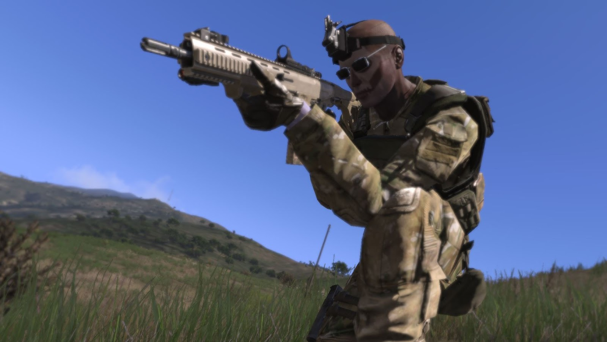
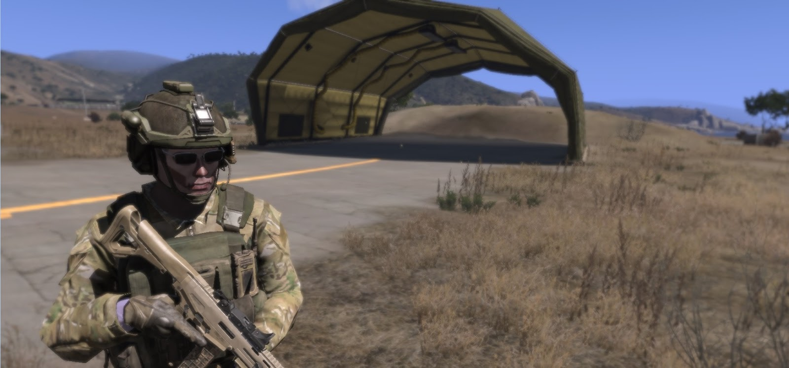

Using a custom face in ARMA III
Tags:I’ve been playing a lot of ARMA 3 BETA recently, a military simulator that has an incredible amount of customizability to create your own game and simulation. ARMA (more specifically ARMA 2: Combined Operations) is the software platform that hosts the famous zombie-survival multiplayer mod (3rd party modification script) game called Dayz.
If you haven’t played ARMA 2 and Dayz, I recommend you do. The game is very affordable and available on Steam. If you don’t have ARMA 3, you should get it too. Although it’s still in BETA, it’s also quite affordable and you can keep in sync with development builds.
Anyway, I’ve started to modify various aspects of ARMA 3 myself, and saw this somewhat outdated tutorial on fan site OFPEC on how to change your character’s face. I thought I would condense the instructions a little to make it easier to use in ARMA 3.
The requires an installed copy of ARMA3, preferably from Steam.
Typically, after playing the simulator a few times, you’ll have been made to create a character with a name. You would have been given the opprtunity to change it’s face and voice as well as select glasses, etc.
For the puposes of this setup, we will go with something off the internet which can serve as a template.
NOTE: If you are using ARMA 2, go to the OFPEC Face Library for faces. For ARMA 3, you can use this face instead as a starter.
Save the image as face.jpg in:
1 | "C:\Users\<windows_name>\Documents\Arma 3 - Other Profiles\<arma_character_name>\face.jpg" |
Where windows_name is your windows login name and arma_character_name is the character you wish to apply the face to.
Then open up ARMA 3 and select OPTIONS, then PROFILE from the MAIN MENU
Then select EDIT then CUSTOM FACE, and APPLY, then OK
 